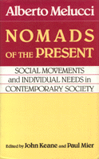

A coherent and representative sample of Melucci�s most important essays
A coherent and representative sample of Melucci�s most important essays


 A coherent and representative sample of Melucci�s most important essays
A coherent and representative sample of Melucci�s most important essays

|  |
Nomads of the PresentSocial Movements and Individual Needs in Contemporary SocietyAlberto Melucci, edited by John Keane and Paul Miercloth EAN: 978-0-87722-599-7 (ISBN: 0-87722-599-0) |
Although he is generally recognized as one of the leading analysts of contemporary social movements, few of Alberto Melucci�s writings have been published in English. Nomads of the Present makes available for the first time in English a coherent and representative sample of Melucci�s most important essays. This synthesis of his work on social movements is no mere collection of previously published essays: each chapter draws on the author�s work in several different places. Of the thirteen interrelated essays in this volume, only five have been published elsewhere in English. The book also features an interview with Alberto Melucci conducted by John Keane and Paul Mier.
1. Contemporary Social Movements (from "Social Movements in the 1980s," "The New Social Movements," and "Ten Hypotheses")
2. Towards a Theory of Collective Action (from "Getting Involved: Identity and Mobilization In Social Movements")
3. Identity and Collective Action (from "L'invenzione del presente")
4. Social Movements and Social Change (from "Movimenti di rivolta," "Lotte sociali e mutamento," and "L'invenzione del presente")
5. New Social Movements? (from "An End to Social Movements?," "The Symbolic Challenge of Contemporary Movements," and "Is There Anything New in New Social Movements?")
6. Individual Needs and System Constraints in Complex Societies (from "L'invenzione del presente" and "Altri codici")
7. The Invention of the Present (from "L'invenzione del presente" and "Altri codici")
8. The Symbolic Challenge: Culture or Politics? (from "Nazioni senza Stato," "Altri codici," and "The Symbolic Challenge of Contemporary Movements")
9. New Cultural Codes in Everyday Life (from "Everyday Life and Collective Action" and "Corpi estranei")
10. Movements as Messages (from "Altri codici" and "Sistema politico, partiti e movimenti sociali")
11. Action and Consciousness: Methods for the Analysis of Contemporary Movements (from "Altri codici")
12. Movements and the Political System (from "New Movements, Terrorism and the Political System" and "L'invenzione del presente")
13. The Democratization of Everyday Life (from "Social Movements and the Democratization of Everyday Life")
14. Social Movements in Complex Societies: An Interview with Alberto Melucci
Alberto Melucci is Professor of Sociology at the University of Milan.
© 2015 Temple University. All Rights Reserved. This page: http://www.temple.edu/tempress/titles/641_reg.html.